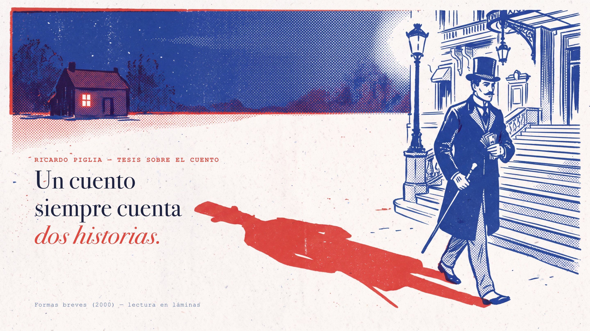
La sombra ya camina hacia la casa. Sabe cómo termina antes que el hombre.
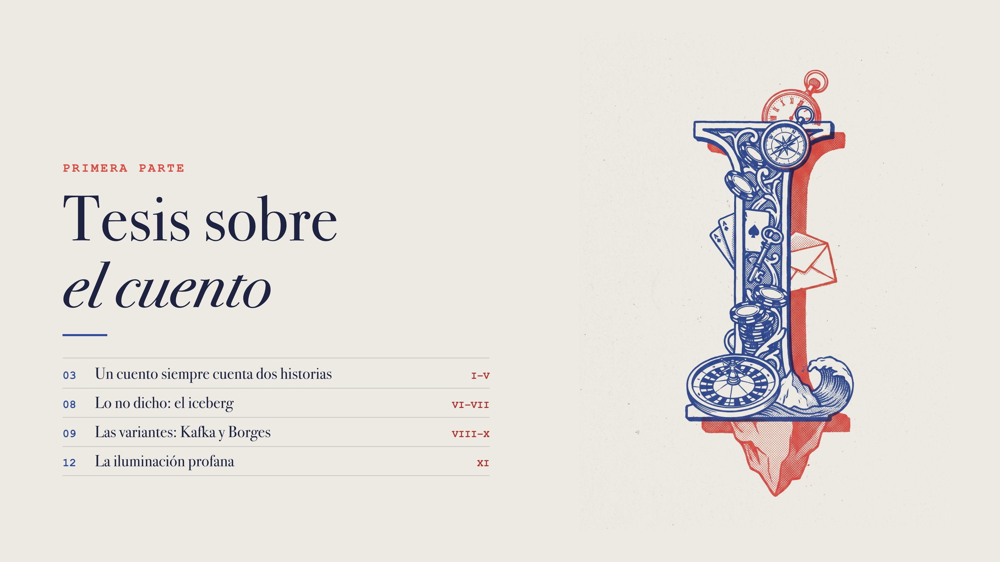
I · La anécdota
«Un hombre, en Montecarlo, va al Casino, gana un millón, vuelve a su casa, se suicida.»
Antón Chéjov, cuaderno de notas
Contra lo previsible (jugar, perder, suicidarse), la intriga es una paradoja: separa la historia del juego de la historia del suicidio.
Un relato visible esconde un relato secreto, narrado de modo elíptico y fragmentario.
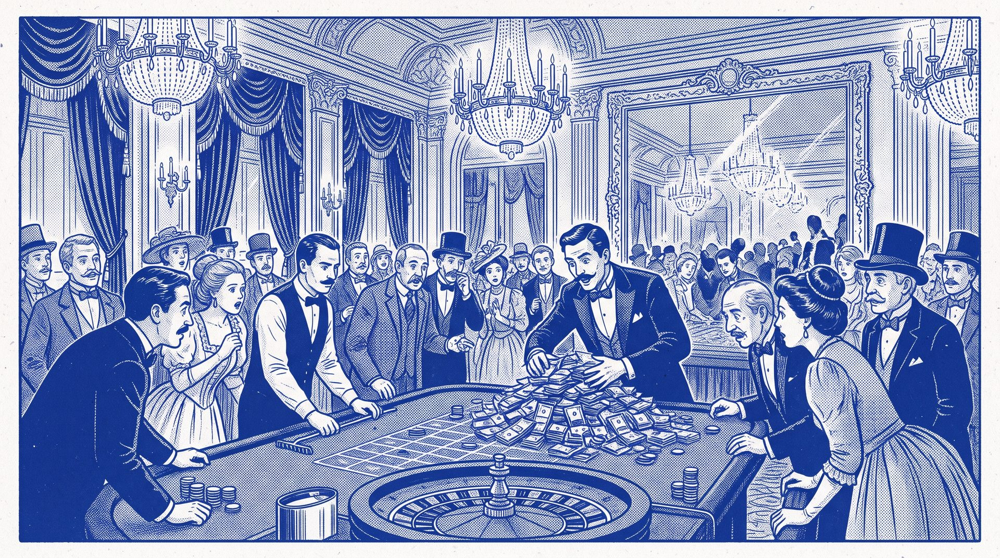
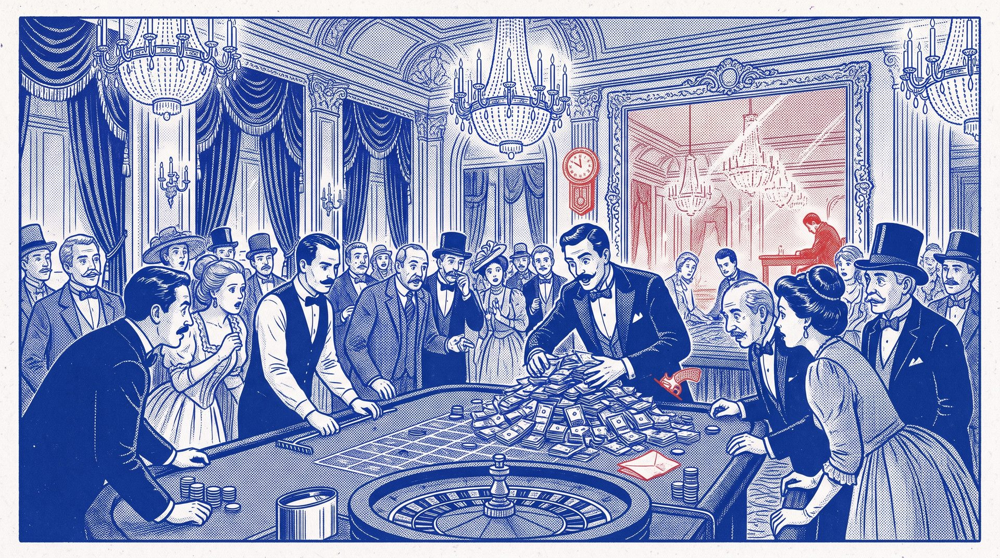
Todo estaba en la sala. Nadie miró el espejo.
Primera tesis
El cuento clásico (Poe, Quiroga) narra en primer plano la historia 1 y construye en secreto la historia 2. El arte del cuentista está en cifrar la segunda en los intersticios de la primera.
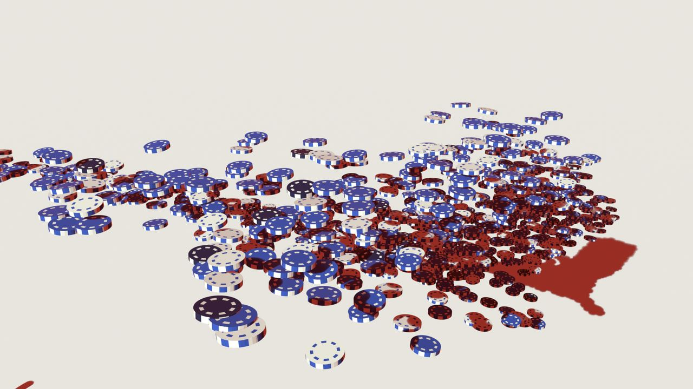
Las fichas no forman nada. Su sombra, sí.
II–III · Dos causalidades
Historia 1: lo que se narra en primer plano.
Historia 2: se cuenta de modo elíptico y fragmentario.
Puntos de cruce: los mismos hechos entran a la vez en dos lógicas narrativas antagónicas. Cada elemento tiene doble función.
Cada vuelta de manivela empuja un diente que nadie ve.
IV · La materia ambigua
El detalle que parece sobrar es el que sostiene todo.
Segunda tesis
El enigma no es un sentido oculto que depende de la interpretación: es una historia que se cuenta de un modo enigmático.
¿Cómo contar una historia mientras se está contando otra?
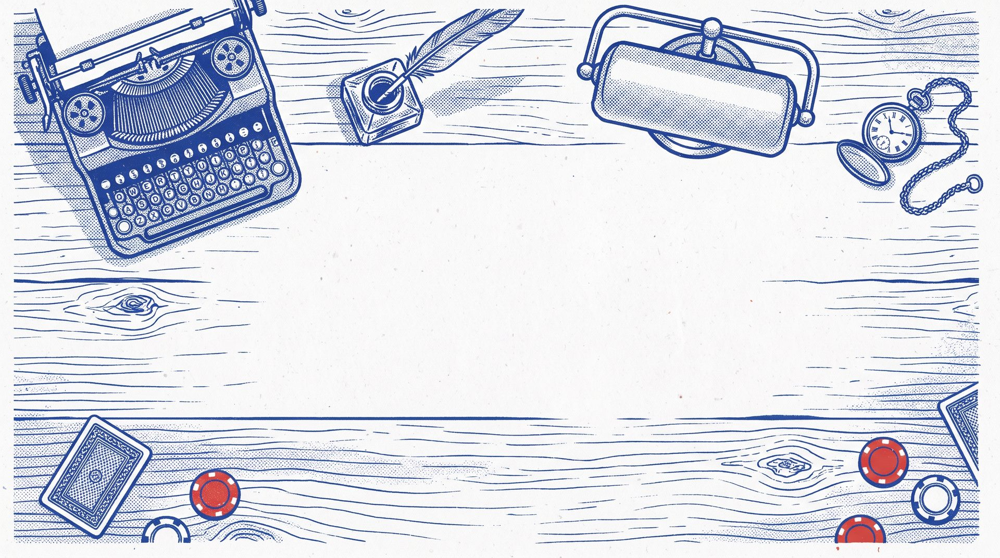
Las mismas palabras, leídas por los agujeros, cuentan otra cosa.
VI–VII · Lo no dicho
El cuento moderno (Chéjov, Mansfield, Anderson, el Joyce de Dublineses) abandona el final sorpresivo y trabaja la tensión entre las dos historias sin resolverla nunca.
En «El gran río de los dos corazones», Hemingway cifra tanto la historia de la guerra que el cuento parece una excursión de pesca. Se nota la ausencia del otro relato.
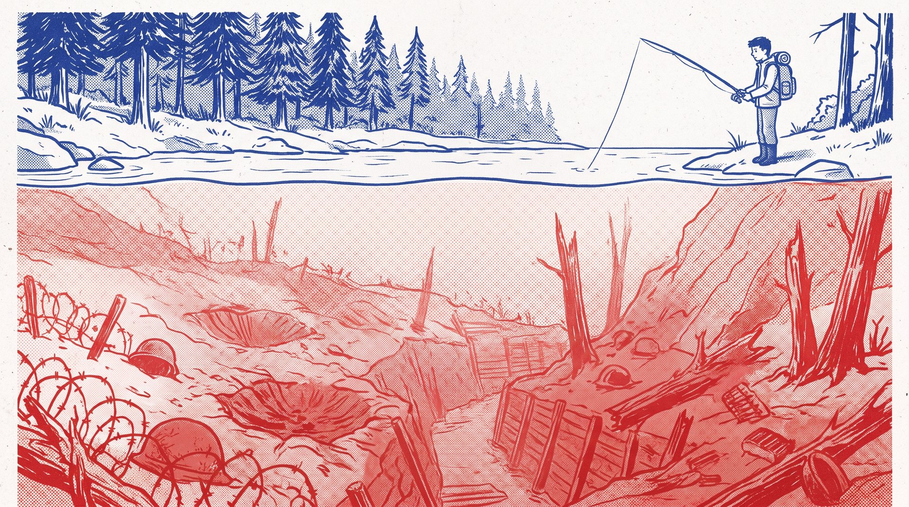
historia 1 · una excursión de pesca historia 2 · la guerra, nunca nombradaLa guerra no aparece ni una vez. Por eso pesa.
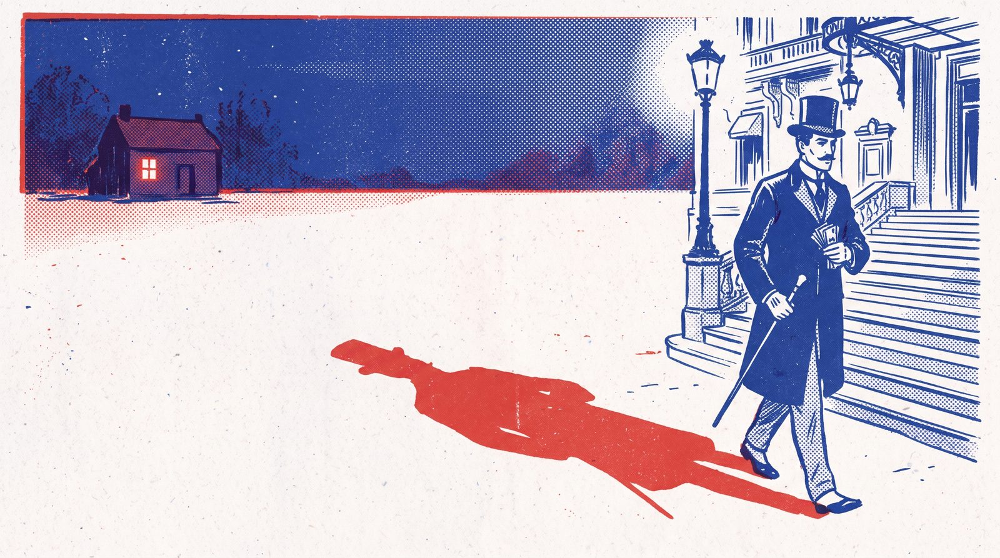
Antes de las variantes
«Un hombre, en Montecarlo, va al Casino, gana un millón, vuelve a su casa, se suicida.»
El juego: va al casino, gana un millón y vuelve a su casa.
El suicidio: lo que la partida no dice.
La misma anécdota, cuatro escritores. ¿Qué historia pone cada uno en la superficie y cuál esconde?
VI–IX · Variantes
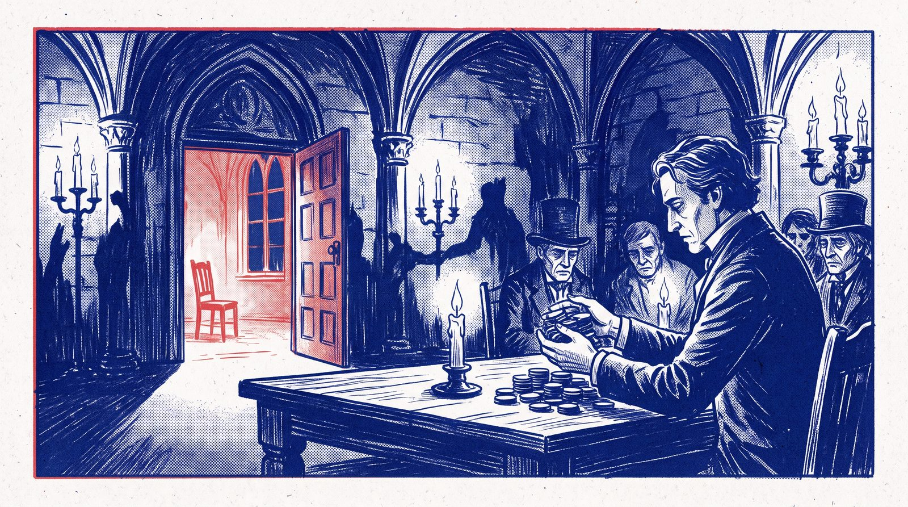
Cambia quién narra. La historia secreta sigue siendo la misma.
X · Borges
Borges narra las maniobras de alguien que arma, con los materiales de una historia visible, una trama secreta destinada a otro.
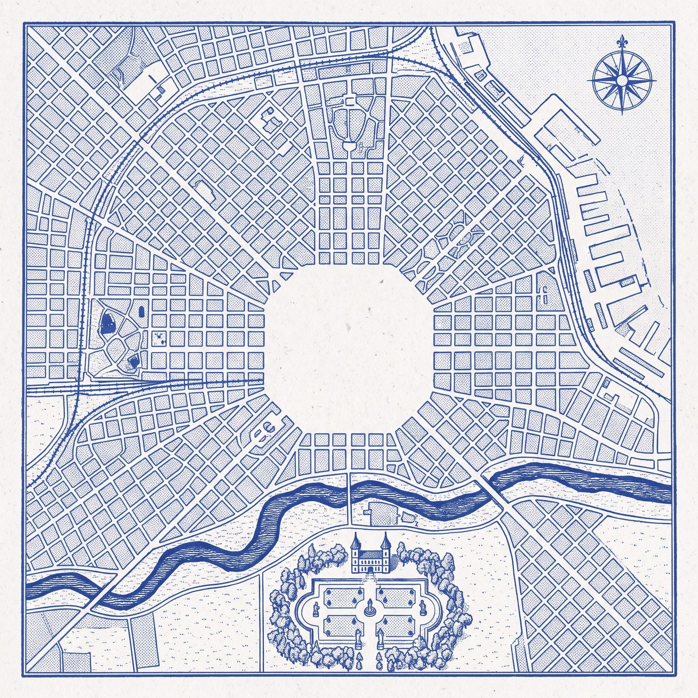
El detective lee bien los signos. Lo que no sabe es que alguien los escribió para él.
XI · La iluminación profana
Busca una experiencia única que permita ver, bajo la superficie opaca de la vida, una verdad secreta: no en una tierra lejana, sino en el corazón mismo de lo inmediato (Rimbaud).
«Esa iluminación profana se ha convertido en la forma del cuento.» R. Piglia
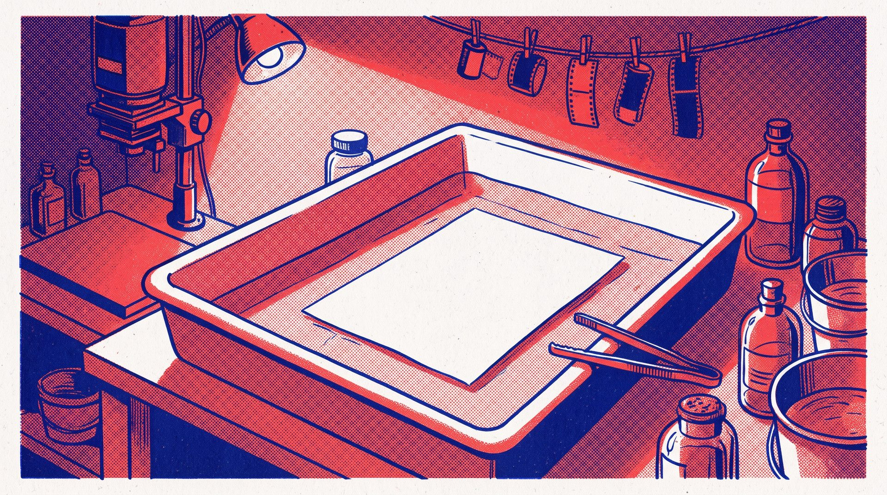
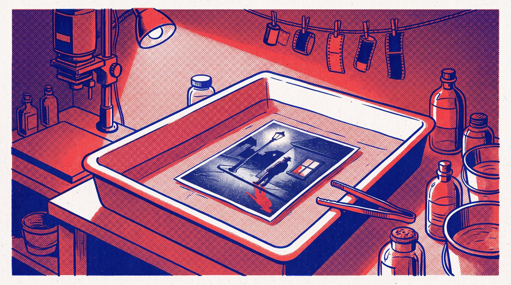
Lo oculto no está lejos: está en lo inmediato.
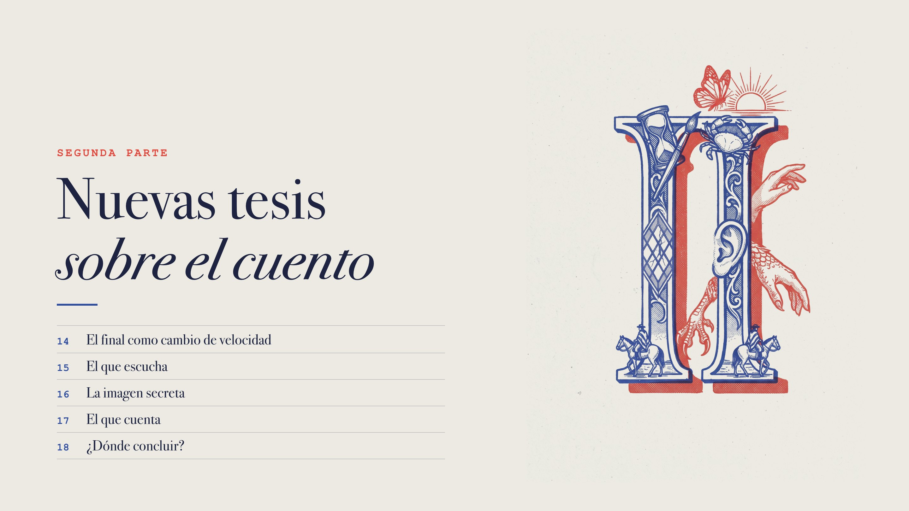
Nuevas tesis · El final
Chuang Tzu pide cinco años para dibujar un cangrejo, y después otros cinco. A los diez, con un solo gesto, dibuja el cangrejo más perfecto que jamás se haya visto (Calvino).
¿La espera forma parte de la obra? Kafka contaría la postergación incesante: el cuadro estaría terminado para todos, menos para Chuang Tzu.
¿Cuánto tardó, al final, en dibujarlo?
Nuevas tesis · El que escucha
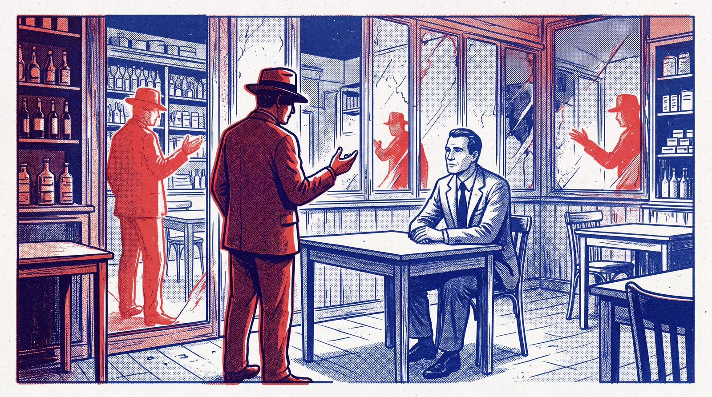
Un hombre servicial y abstraído escucha, en un almacén de espejos altos, una historia que comprende a medias y que lo implica.
El relato se dirige a un interlocutor perplejo que va siendo engañado. Al final entiende que la historia que intentaba descifrar era falsa: había otra, secreta, que le estaba destinada.
Cree viviruna serie de crímenes que solo él sabe descifrar.
Le estaba destinadala trama que Scharlach construyó para atraparlo.
Cree viviruna aventura que lo exalta y lo ennoblece.
Le estaba destinadala burla de Bandeira, que lo dejó llegar alto para matarlo.
Recibeun relato verosímil de ultraje y defensa propia.
Le estaba destinadauna venganza tejida con perversa precisión, que nadie más podrá comprender.
Recibenuna leyenda heroica.
Les estaba destinadala ficción que Nolan urdió con el azar y con Shakespeare, y que Ryan descifra años después.
En el fondo, todos somos la tía de Flannery O'Connor: queremos que la historia continúe.
Quien escucha también está dentro del cuento.
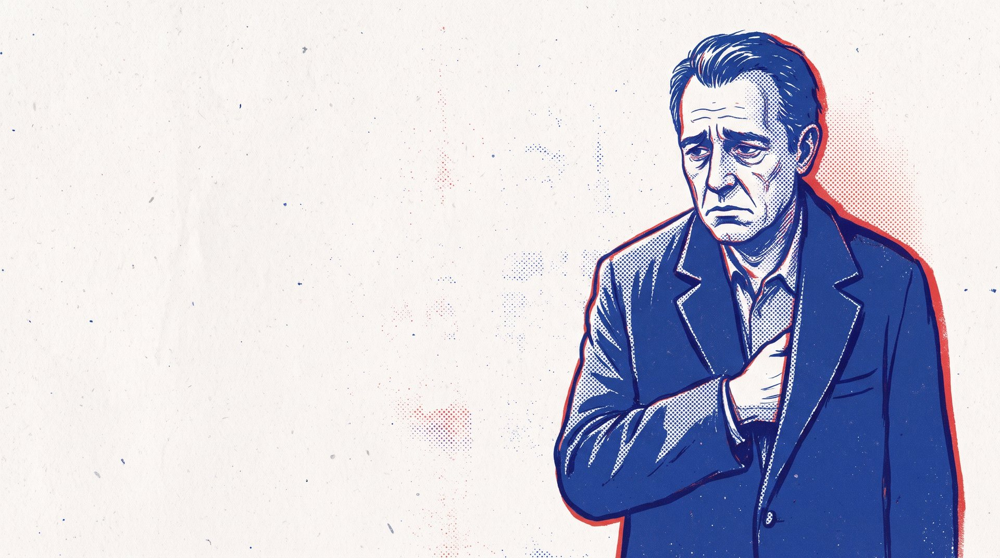
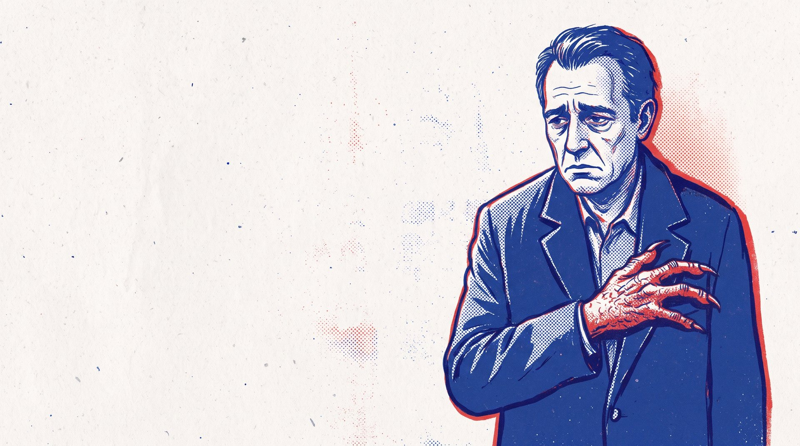
Nuevas tesis · La forma secreta
En un sueño que cuenta Borges, un amigo muy cambiado esconde la mano derecha dentro del saco. Hasta que la saca, el relato es apenas un encuentro triste entre dos amigos. Después, con un gesto, todo cambia.
La garra estuvo en el saco desde la primera línea.
Nuevas tesis · El que cuenta
Todo el Martín Fierro lo narra Fierro. En el cierre surge otra voz, que se queda de este lado de la frontera mientras ellos se van:
no sé si los habrán muerto
en alguna correría,
pero espero que algún día
sabré de ellos algo cierto.
José Hernández, El gaucho Martín Fierro (1872)
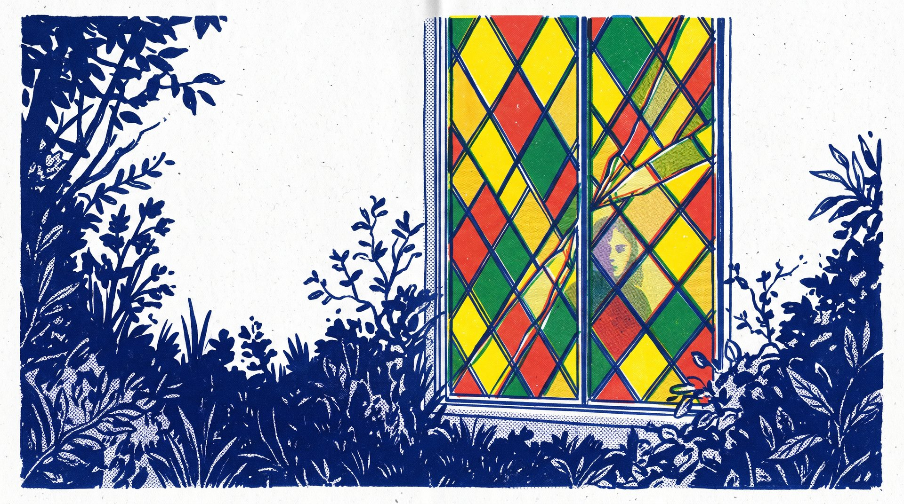
Hay una fisura en la ventana: en un rombo del vitral se vislumbra la vaga sombra de un rostro.
Al final aparece la voz que estuvo contando desde el principio.
Nuevas tesis · ¿Dónde concluir?
Borges habría cambiado el cangrejo por una mariposa: así tendría dos historias. Si Chuang Tzu primero pinta y después sueña, el cuadro anuncia una metamorfosis.
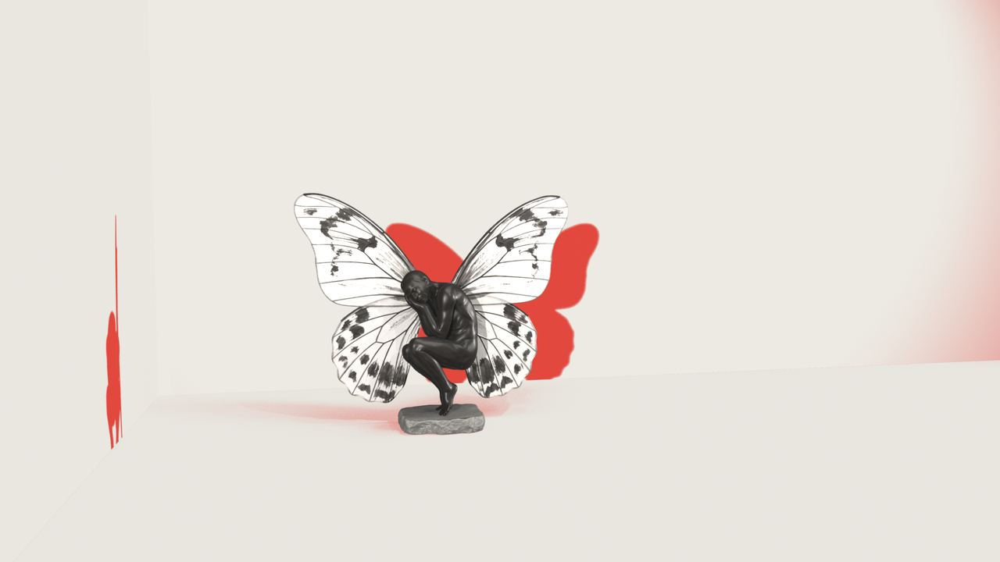
Según de dónde venga la luz, sueña el hombre o sueña la mariposa.
Nuevas tesis · Borges reescribe a Chuang Tzu
Si cambia el orden de las dos historias, cambia el final. ¿Cuál es la historia secreta? Es decir, ¿dónde concluir?
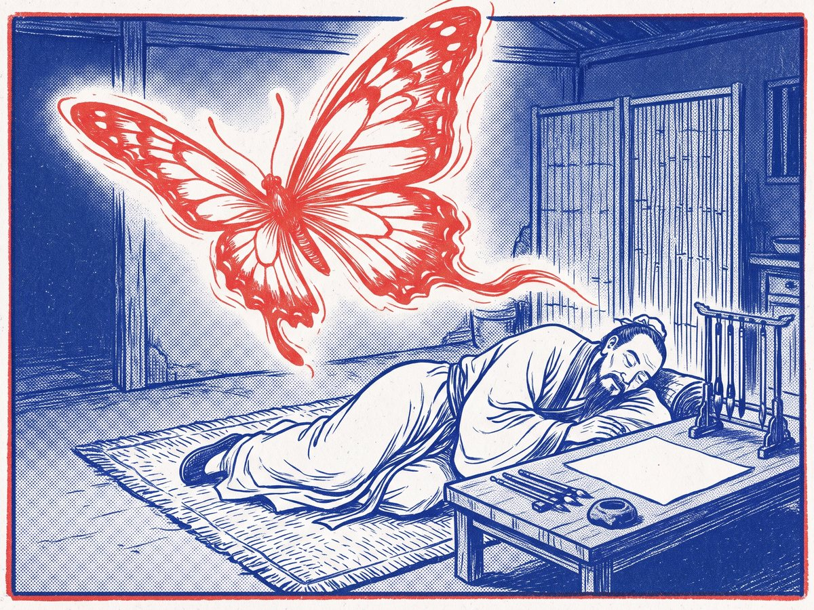
El sueñoChuang Tzu sueña que es una mariposa.
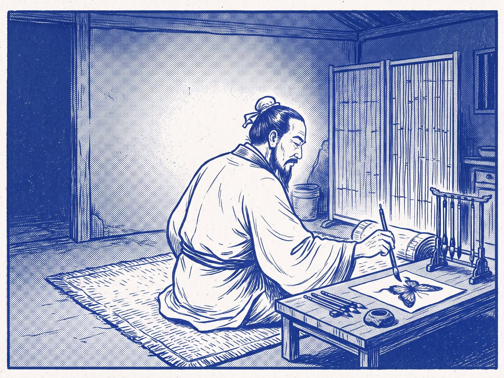
El cuadroPinta una mariposa, la más perfecta que jamás se haya visto.
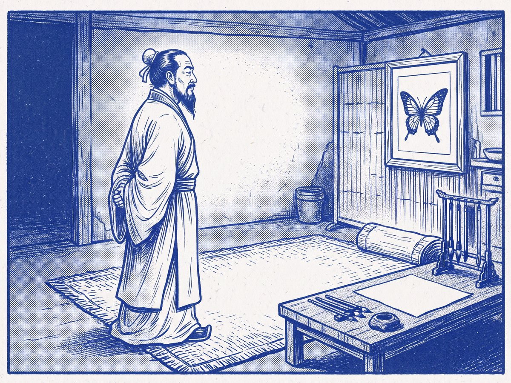
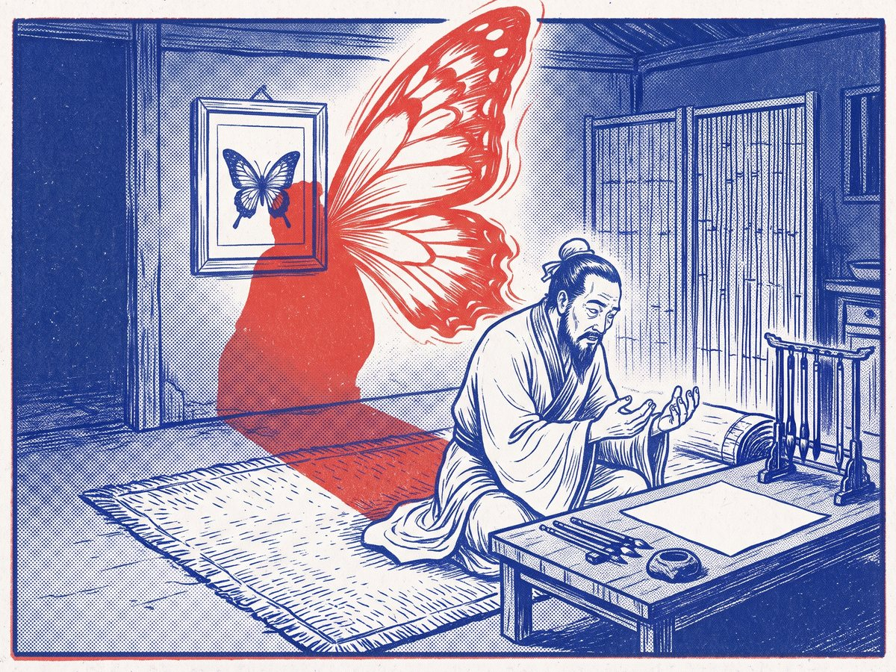
El sueño explica el cuadroEl cuadro anuncia una mutaciónPinta lo que soñó: la ambigüedad se corta y la historia se cierra.Al despertar no sabe si es un hombre que soñó ser mariposa o una mariposa que sueña ser hombre.
El final ya estaba en el orden.
Para concluir
Índice de láminas
Esta presentación está hecha para verse en horizontal. Gira el teléfono.